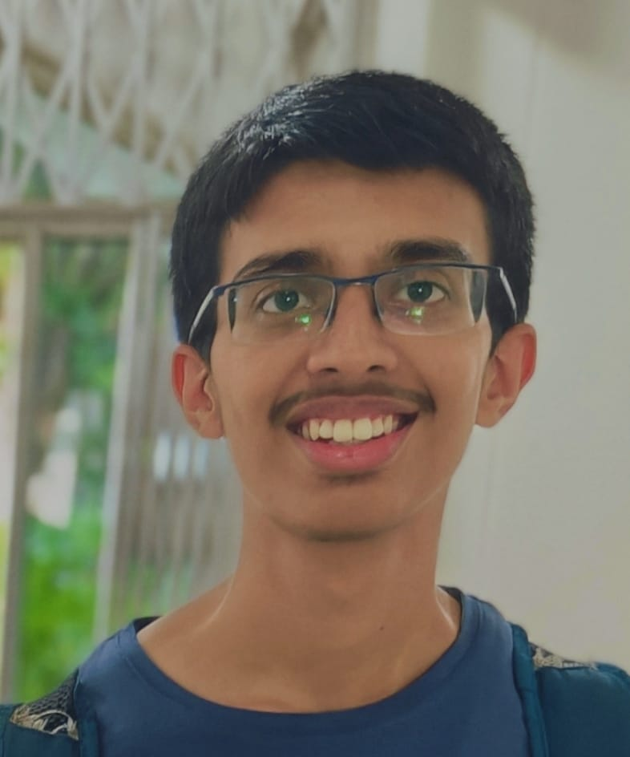

About

I am a computer science undergraduate student with a strong interest in programming and technology. I enjoy learning how websites and software work behind the scenes and building my own projects to improve my skills. I started learning programming at a young age because of my father, and over time it has became something I genuinely enjoy doing. Apart from academics, I try to stay up to date with new technologies and like to exercise to stay healthy. I believe consistency and practice are the most important parts of learning programming. My goal is to become a skilled software developer and work on meaningful projects that solve real-world problems. I am currently focusing on improving my skills and understanding the fundamentals of programming and computer systems. In the future, I hope to contribute to larger open-source projects and continue learning about new technologies throughout my education.
My programming journey:
-
My father started my programming journey when I was in primary school. We used to code for on a great website called Code.org. It taught basic coding concepts with great stories and block coding. Code.org had a concept of 'Hour of Code' where they had activities that would take an hour and would be a good learning experience. It taught me my basics and made me enjoy coding :)
-
When COVID began, I felt like learning new things and spending my time well. I came across a website called Progate.com that taught Web develeopment for free. I learnt about HTML, CSS and even Javascript there. My father encouraged me to try more languages on the website, and we together completed the basics of many languages - more about this is available in the Projects page
-
During 11th and 12th, I took Computer Science as my elective under Science stream. I learnt about Python in-depth and was introduced to mySQL and how to interact with the DBMS using Python. My teacher insisted on knowing how and what Python's built-in functions did and always made us code their functionality manually. As part of the mandatory project, I built a cooking guide with two of my classmates using Python's tkinter library. Unfortunately, I no longer have the code :(
-
My journey took on new wings in college: I learnt C and academics required constant practice and learning of various interesting topics like recursion, dynamic programming, structs, file operations, makefiles, etc. I started competetive programming on various websites like Codeforces, CSES, Leetcode, Atcoder and USACO. I participated in multiple Codeforces contests as a rated participant. As of the creation time of this website, I am still a newbie in Codeforce :( I also participated in various hackathons held in the college: build@break and Megathon 2025. I got hand-on learning from these events. This experience helped me in making the CLI version of 'Twixt!' using only C - more on the Projects page
-
In the second semester, I built upon C and learnt C++ and its STL. I participated in more Codeforces contests and also Lockout 2026. Learnt about different data structures: stacks, queues, heaps, binary trees, graphs and algorithms like bfs, dfs, Kahn's. I also learnt shell-scripting, Python, HTML, CSS and Javascript, which have been very interesting and have broadened my skill set and experience.